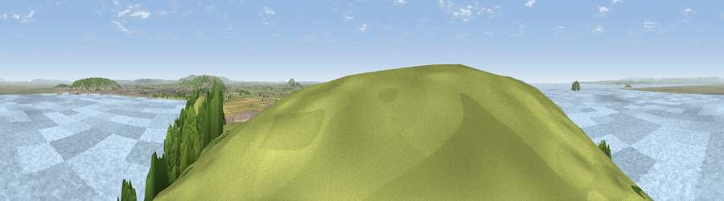

Brean Down
#5052 in England · top 19% of its area beats it · near BreanThe view, rendered

A 360° render of this exact spot computed from the terrain model, tree cover and land cover — summer colours, afternoon light, calibrated against photographs of famous viewpoints. Real trees, hedges and buildings will differ in detail.
The panorama
Grey silhouette: terrain skyline in each direction (720 bearings, Earth curvature and refraction included). Dashed green: skyline with trees (+15 m) and buildings (+8 m) as obstacles. Blue strip: how far the ground is visible on each bearing.
Where the view opens
Wedge length = distance to the farthest visible ground on that bearing (vegetation-aware). Rings at 10, 25 and 50 km.
What fills the view
86% water · 6% grassland · 4% woodland · 1% cropland · 1% built-up
Angular shares of the visible panorama (visual magnitude), not map area. Landscape diversity 0.26 (0–1 Shannon).
Key numbers
More beautiful places nearby
The staircase of upgrades: each row has a higher view potential than everything closer. Driving times are estimates from straight-line distance, calibrated against real road routing — check an actual route before setting out.
| Place | Direction | Drive | Score |
|---|---|---|---|
| Viewpoint near Uphill | ESE · 1 km | ~3 min | 73.6 |
| Viewpoint near Weston-super-Mare | NE · 5 km | ~10 min | 73.9 |
| Viewpoint near Bleadon | E · 6 km | ~12 min | 77.7 |
| Bleadon Hill [Loxton Hill] | ESE · 8 km | ~17 min | 79.6 |
| Viewpoint near East Quantoxhead | SW · 23 km | ~38 min | 83.1 |
| Viewpoint near West Quantoxhead | SW · 23 km | ~38 min | 87.9 |
| Viewpoint near West Quantoxhead | SW · 24 km | ~39 min | 88.7 |
| Holdstone Hill | W · 67 km | ~90 min | 90.2 |
51.32585, -3.02736 · source: osm peak · position refined by local search. Computed location — check access rights before visiting.